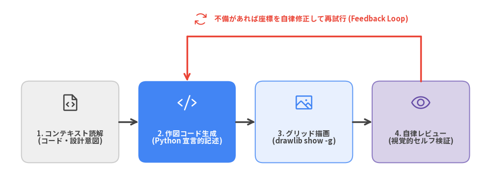
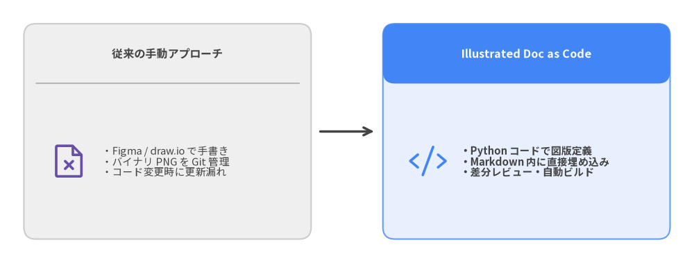
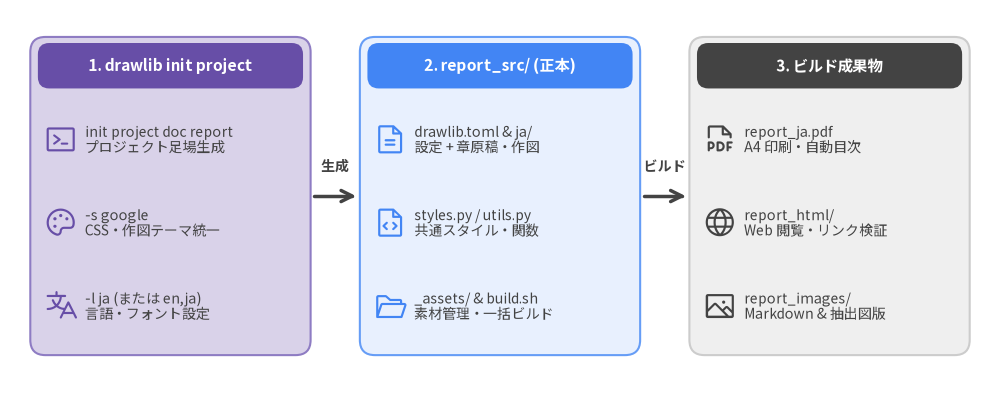
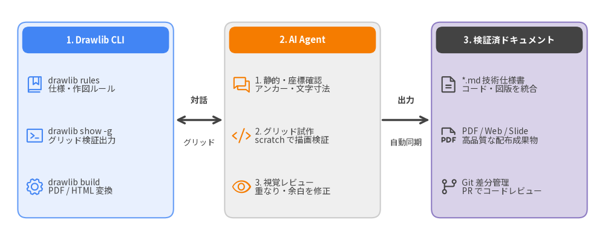
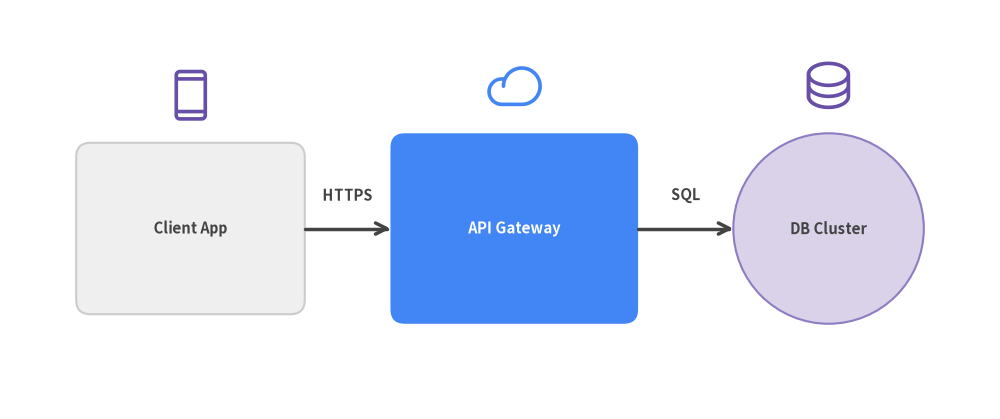
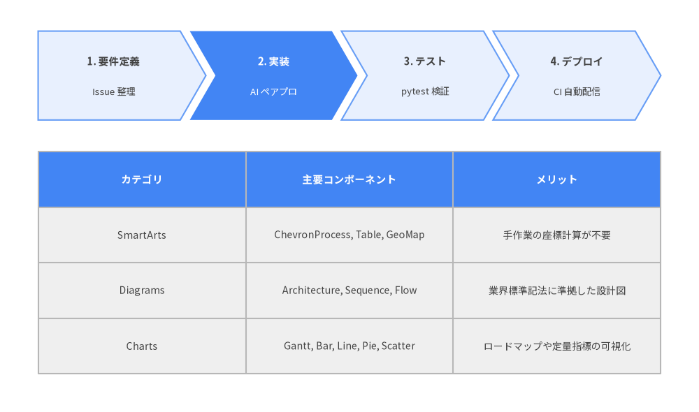
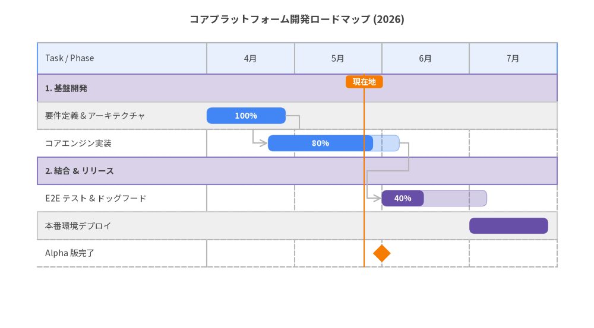
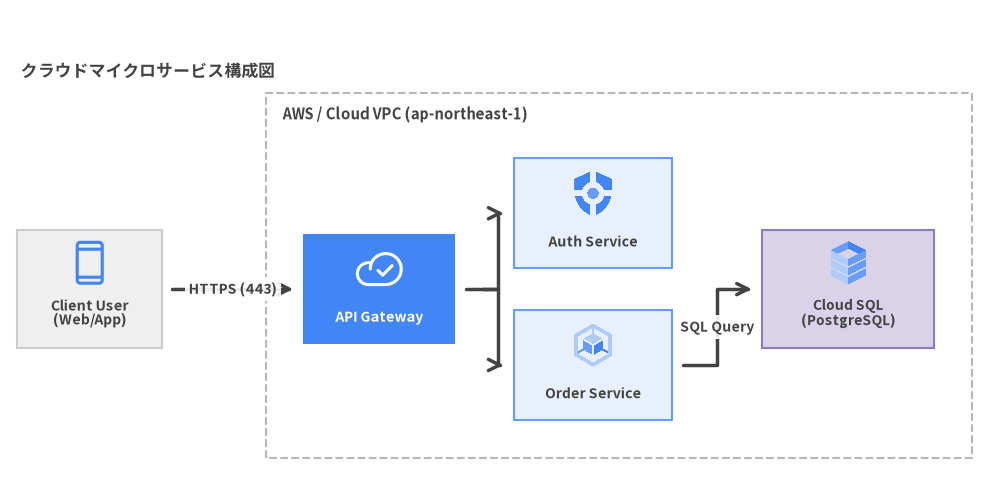
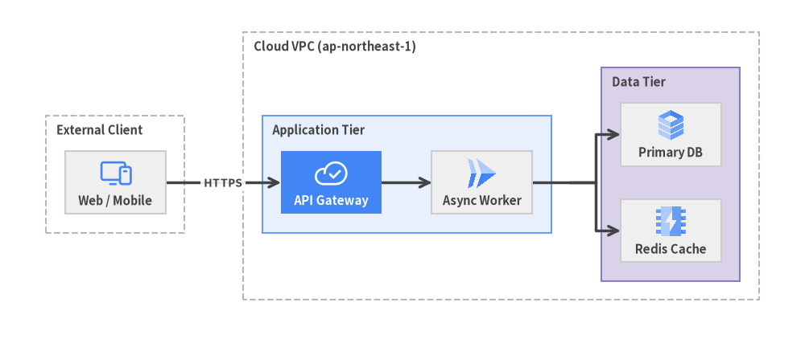
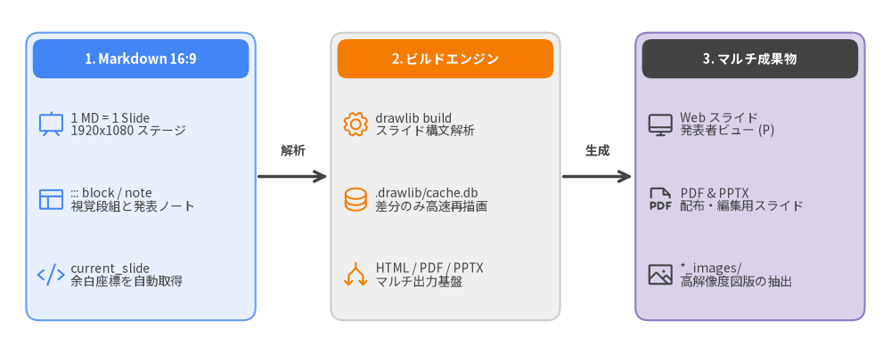

AIとDrawlibによるドキュメント自動生成
AI時代の "Illustrated Documentation as Code"

作成者: Drawlib Core Team
対象: ソフトウェアエンジニア・アーキテクト・AI ペアプログラマー
バージョン: 0.3.4
発行日: 2026年11月
第1章: AI 開発における作図・ドキュメントの課題
AI によるコード生成やペアプログラミングが日常的になる中、ソフトウェア開発におけるボトルネックは「コードの実装」から「設計・アーキテクチャの可視化とドキュメントの同期」へとシフトしています。
1.1 設計書と実装の乖離（ドキュメントの腐敗）
AI コーディングエージェント（Claude Code, Cursor, Gemini CLI, GitHub Copilot など）を活用することで、プログラムコードは驚異的なスピードでリファクタリングや機能追加が行われます。しかし、システム全体のアーキテクチャ図やシーケンス図、データベーススキーマ図などのドキュメントは更新されずに置き去りにされがちです。
結果として、以下のような問題が発生します:
- ドキュメントの形骸化: 「ドキュメントと現行コードのどちらが正しいのかわからない」状態に陥る。
- オンボーディングの遅延: 新規メンバーや別の AI セッションが全体構造を正しく把握できない。
- 暗黙知の増大: 最新の設計意図がコードのコミットログやチャット履歴にしか残らない。
1.2 手動 GUI ツールの限界
従来、エンジニアは以下のような GUI ツールを用いて作図を行ってきました:
- draw.io / diagrams.net
- Figma / Miro
- PowerPoint / Google Slides
これらのツールで作成された図版は通常、PNG や JPEG などのバイナリ画像としてリポジトリに保存されます。このバイナリ管理には決定的な欠点があります:
- Git で差分（diff）が追えない: どこが変更されたのかプルリクエストで視覚的にも論理的にも追跡できません。
- AI Agent が編集できない: AI はバイナリ PNG の中身を直接編集することができません。図を直すには人間が手動でツールを開いて修正し、再度エクスポートする手間が発生します。
- デザインの不統一: 作成者ごとにフォント、色、線の太さ、余白がバラバラになり、組織としてのドキュメント品質が保てません。
1.3 AI に生の SVG や Matplotlib を書かせると破綻する理由
では、AI にコードで図を描かせれば解決するでしょうか？ 多くの開発者が試みて挫折するのが、生 SVG や Matplotlib の直接生成です:
- 生 SVG の直接生成:
- 日本語（CJK）を含むテキストの折り返し計算やフォント幅の算出が難しく、テキストが枠からはみ出す。
- 矢印やコネクタの座標計算が複雑で、線の交差や位置ずれが多発する。
- 何百行もの
<path>や<rect>が生成され、人間が保守・レビュー不能になる。
- Matplotlib の流用:
- 本来は学術的な散布図や折れ線グラフのためのライブラリであり、システム構成図やシーケンス図、構造化図解を描くための高レベルなプリミティブ（ノード、グループ、矢印配線、アイコン、自動レイアウト）が存在しない。
- 大量のボイラープレートコードが必要となり、AI も構文エラーや座標崩れを起こしやすい。
こうした背景から生まれたのが、Python による "Illustration as Code"（コードとしての図版） および "Illustrated Documentation as Code"（図解統合ドキュメント） を実現するライブラリ Drawlib です。
第2章: 解決アプローチ: Illustrated Documentation as Code
Drawlib は、ソフトウェアエンジニアと AI コーディングエージェントのための "Illustrated Documentation as Code" (IDaC) を実現する Python ライブラリです。従来の Documentation as Code（DaC）がテキスト中心であったのに対し、Drawlib は「図解・設計図がファーストクラスで統合された技術文書」をコードだけで構築します。
2.1 "Illustrated Documentation as Code" のコア思想
Drawlib のアプローチはシンプルです:
- 宣言的 Python スクリプト: 直感的な高レベル API でアーキテクチャ図・フロー図・チャート・構造化図解を定義します。
- Markdown への直接インライン埋め込み: ドキュメントの中に
drawlibコードブロックとして作図コードを直接記述します。 - 完全なバージョン管理: 図版の定義コードが Markdown テキストとして Git で管理され、プルリクエストでコード差分としてレビュー可能です。
- マルチフォーマット自動コンパイルと差分キャッシュ: CLI ビルド（
drawlib build）によって、マルチページ HTML サイト（site）、A4 ベクター PDF・単一 HTML レポート（doc）、16:9 ワイドスクリーンスライドデッキ（slide）、および GitHub 向け Markdown へと自動コンパイルされます。また、SQLite ベースの差分ビルドキャッシュ（.drawlib/cache.db）により、変更された図版のみを高速に再レンダリングします。
2.2 従来のアプローチとの比較

2.3 AI ペアプログラミングとの相乗効果
コードとして表現できることで、AI コーディングエージェント（Claude Code, Cursor, Gemini CLI, GitHub Copilot 等）との協調作業が飛躍的に容易になります:
- AI が仕様から図を自動生成: 新しい API エンドポイントやデータモデルを実装した際、AI に「アーキテクチャ図を更新して」と指示するだけで図版コードが生成されます。
- マルチモーダル検証: AI Agent は自身が生成した図版を座標グリッド付き画像（
drawlib show -g）としてレンダリングし、配置やテキストの重なりを視覚的にセルフレビューして修正できます。 - 再現性（100% Deterministic）: 同じコードからは常にピクセル単位で同一の図版が再現されます。
第3章: Drawlib の全体像と主要機能
Drawlib は、"Illustrated Documentation as Code" を支える統合描画・ドキュメント作成プラットフォームです。ドキュメント構築パイプラインに加え、低レベルの基本図形描画から高度なシステムアーキテクチャ設計、プレゼンテーション・アニメーション生成までをカバーする 6 つの機能レイヤーを提供しています。
3.1 描画・ドキュメントコンポーネントレイヤー
| レイヤー | 提供モジュール | 主な用途・描画対象 |
|---|---|---|
| 1. Primitives (基本要素) | drawlib.shapes, lines, text, icons, images |
43種の幾何図形、折れ線・曲線・ブロック矢印、リッチテキスト、Phosphor / FontAwesome / 公式 GCP アイコン |
| 2. SmartArts (構造化) | drawlib.smartarts |
プロセスシェブロン、表組み (Table)、オフライン世界・日本地図 (GeoMap)、シンタックスハイライト付きコードカード (SourceCode)、マインドマップ (MindMapNode)、ツリー階層 (TreeNode)、サイクル図 (Cycle)、ピラミッド、グリッド等 |
| 3. Charts (定量データ) | drawlib.charts |
ガントチャート、棒グラフ、折れ線グラフ、面グラフ、円・ドーナツグラフ、レーダー、散布図・バブルチャート（共通軸・対数スケール・凡例基盤） |
| 4. Diagrams & Graphs (システム設計) | drawlib.diagrams, drawlib.graph |
クラウド構成図、フロー図、シーケンス図、ER図、クラス図、状態遷移図、および 5 種の Pure Python 自動レイアウトソルバー (get_layout()) |
| 5. Presentation & Animation | drawlib.slide, drawlib.anim |
16:9 プレゼンテーションステージ (::: block / ::: note, Presenter View)、APNG / Animated WebP マルチフレームアニメーション |
| 6. Builder, CLI & Tools (ドキュメント基盤) | drawlib.tools（CLI: drawlib） |
HTML / PDF / スライド / Markdown / 画像一括ビルド、SQLite 差分ビルドキャッシュ (.drawlib/cache.db)、アセットキャッシュ管理 (drawlib cache)、ローカル検証サーバー (drawlib serve --check) |
3.2 統一デザインシステムとセマンティックカラー
Drawlib では、作図のたびに RGB 値を迷う必要はありません。洗練された セマンティック 6 色パレット と ニュートラルベースライン、および一貫したスタイル命名規則が標準で組み込まれています。
Styles.Neutral/Styles.PrimaryNeutral/Styles.SecondaryNeutral: 図版全体の土台となる落ち着いたニュートラルカード（淡いグレー・ブルーグレー・スレート系）Styles.Primary: システムの中核ノードや主動線（青系）Styles.Secondary: 外部システムやクライアント（スレート・インディゴ系）Styles.Accent: 注目させたいハイライトや補助サービス（アンバー・ティール系）Styles.Muted: 境界枠や補助注記、背景コンテナ（薄いグレー系）Styles.Success/Styles.Danger: 正常ステータス（緑系）および異常・警告・エラー（赤系）
各カラーには PrimaryFlat（塗りつぶし）、PrimaryOutline（枠線）、PrimaryBold（太線）、PrimaryDashed（破線）などの PascalCase 定数トークンが用意されています。
50%以上ニュートラルベースライン原則（虹色ダイアグラムの防止）
すべてのノードに鮮やかな原色（PrimaryFlat, AccentFlat, SuccessFlat 等）を割り当てると、どこが重要なのか判別できない「虹色ダイアグラム」になってしまいます。Drawlib ではプロフェッショナルな視覚的階層を保つため、以下の配色原則を採用しています:
- 50%以上をニュートラルカードで構成: 図内の 50% 以上のノードには
Styles.Neutral、Styles.PrimaryNeutral、Styles.SecondaryNeutralを使用し、穏やかな背景トーンで構造を整えます。 - 高彩度カラーは 1〜2 個の焦点（Focal Point）に限定:
Styles.PrimaryFlatやStyles.AccentFlatなどの強い塗りつぶしは、図の中で最も注目させたい 1〜2 個の主要要素だけに厳選して使用します。
テキストおよび接続線のニュートラルカラー原則
視認性の確保と見やすいレイアウトのため、テキストと接続線にも以下の基本ルールが定められています:
- ニュートラルタイポグラフィ: 背景が明るいカードやキャンバス上では
Styles.DarkまたはStyles.DarkBoldを基本とします。PrimaryFlatなどの濃い塗りつぶしノード内部ではStyles.WhiteBoldまたはStyles.Lightを使用します（意味なく文字自体にPrimaryやSecondaryを選ぶことは避けます）。 - ニュートラルコネクタ: 通常の処理進行や接続線・矢印は
Styles.DarkBoldを推奨します。Styles.PrimaryやStyles.Dangerなどのカラー矢印は、クリティカル動線やエラーロールバックなど、強調すべき意味がある場合のみ使用します。
3.3 日本語フォント・CJK の完全サポート
Drawlib は、日本語を含む多言語タイポグラフィをファーストクラスでサポートしています。
--lang ja を指定してプロジェクトを作成すると、以下の環境が自動的に整います:
- HTML / PDF 出力: Google Fonts（Noto Sans JP）およびローカルシステムフォント（Hiragino Sans, Yu Gothic）の適切なフォントスタックが適用されます。
- キャンバス描画:
drawlib.fonts.FontJapaneseが自動適用され、図形内の日本語テキストの文字化けやレイアウト崩れを防ぎます。
第4章: インストールと環境構築
Drawlib（v0.3.4）は公式 PyPI パッケージとして公開されており、モダンな Python パッケージマネージャー uv または pip を用いて数秒でセットアップできます。
4.1 前提環境
- Python: 3.11 以上（3.11 / 3.12 / 3.13 対応）
- 対応 OS: Linux / macOS / Windows
- パッケージマネージャー:
uv（推奨）またはpip
4.2 PyPI からのインストール (uv / pip / uvx)
標準の drawlib パッケージをインストールするだけで、作図・HTML ドキュメント・16:9 Web スライド・Markdown に加え、ベクター PDF（drawlib build pdf）、編集可能な MS Word（drawlib build docx）、編集可能な 16:9 MS PowerPoint（drawlib build pptx） のすべてのエクスポート機能が追加オプションなしでそのまま利用できます:
# uv を使用する場合（推奨）
uv add drawlib
uv run drawlib --version
# プロジェクトに追加せず、一時環境で単発実行する場合 (uvx)
uvx drawlib --version
uvx drawlib init project site
# pip を使用する場合
pip install drawlib
4.3 PDF・Office（Word / PowerPoint）出力とヘッドレスブラウザ自動取得
Drawlib は標準インストールだけでドキュメントおよびスライドの各種オフィス・印刷フォーマット出力を完結させます:
- ベクター PDF / 16:9 PowerPoint 出力 (
drawlib build pdf,drawlib build pptx): 初回の PDF または PPTX ビルド実行時に、Playwright 経由で管理対象の ヘッドレス Chromium バイナリが自動的にダウンロード・キャッシュ されます。手動でブラウザをセットアップする必要はありません。 - 編集可能な MS Word 出力 (
drawlib build docx): ピュア Python（python-docx）のみで動作し、ヘッドレスブラウザ不要でdocプロジェクトから編集可能な.docx仕様書（--generate-indexによる目次生成対応）を直接出力できます。
Note (最小構成の Linux Docker コンテナ環境):
Ubuntu / Debian 等の最小コンテナイメージで、ヘッドレス Chromium の起動に必要な OS 共有ライブラリが不足している場合は、以下のコマンドでシステム依存パッケージを一括導入できます:
uv run playwright install-deps chromium
4.4 アセット・ビルドキャッシュ管理 (drawlib cache)
PyPI パッケージ本体を軽量に保つため、以下の 2 種類のキャッシュ機構が備わっています:
- 外部アセット & ヘッドレスブラウザキャッシュ:
多言語フォント（Roboto, Noto Sans JP 等）、ベクターアイコン（Phosphor, FontAwesome, 公式 GCP アイコン）、オフライン地図データ（
GeoMap）、および PDF / PPTX 出力用のヘッドレス Chromium は、初回利用時にオンデマンドで自動取得され、ローカルにキャッシュされます。 - 図版差分ビルドキャッシュ (
.drawlib/cache.db):drawlib buildやdrawlib showの実行時、コードブロック・styles.py・utils.py・参照アセットのハッシュ値を SQLite データベースに記録し、変更のない図版の再レンダリングをスキップしてビルドを高速化します。
オフライン環境や CI/CD コンテナ向けに全アセット・ブラウザを事前取得したい場合や、キャッシュをクリアしたい場合は drawlib cache コマンドを使用します:
# キャッシュ状態の一覧表示
uv run drawlib cache list
# オフライン・CI 環境向けに全アセット（フォント・アイコン・地図・ヘッドレス Chromium）を一括事前取得
uv run drawlib cache download --all
# カテゴリ別に取得する場合: --fonts / --icons / --maps / --browser
# 差分ビルドキャッシュ（.drawlib/cache.db）のみをクリアして全図版を強制再描画
uv run drawlib cache clear --images
# アセットと差分ビルドキャッシュをすべてクリア
uv run drawlib cache clear --all
4.5 インストールの動作確認
インストールが完了したら、以下のコマンドで CLI が利用可能であることを確認します:
# バージョンの確認 (0.3.4)
uv run drawlib --version
# 利用可能なプロジェクトテンプレート一覧の表示
uv run drawlib init project list
doc、site、slide、images の 4 種類のプロジェクトテンプレートが表示されれば環境構築は完了です。
第5章: プロジェクト作成とビルド運用
Drawlib には、目的別のドキュメントプロジェクトを瞬時にスキャフォールドする drawlib init project コマンドが用意されています。
5.1 プロジェクトテンプレートの種類
| テンプレート | 用途 | 主な生成成果物 |
|---|---|---|
doc |
複数章の技術仕様書、設計レポート、提出資料 | <target>_<lang>.pdf, <target>_<lang>.docx, <target>_html/, <target>_markdown/, <target>_images/ |
site |
サイドバーナビゲーション付きの多ページドキュメントサイト | <target>_html/, <target>_markdown/, <target>_images/ |
slide |
16:9 プレゼンテーションスライド（Web 発表・PDF / PPTX） | <target>_html/<lang>/index.html, <target>_<lang>.pdf, <target>_<lang>.pptx, <target>_images/ |
images |
独立した Python 作図スクリプト集 | <target>_images/*.png（または <target>/*.png, *.webp） |
5.2 日本語 Google スタイルのドキュメントプロジェクト作成
以下のコマンド 1 つで、日本語対応および Google スタイルの線形ドキュメントプロジェクト（report_src/）を作成できます（-l en,ja のように複数言語を同時初期化することも可能です）:
uv run drawlib init project doc report -l ja -s google

ターゲット引数による名前の連動仕様
drawlib init project doc report -l ja を実行すると、i18n ネイティブの連動関係が自動的に構築されます:
- ソースフォルダ:
report_src/直下にdrawlib.toml（[project]+[i18n]）とロケールフォルダreport_src/ja/（-l en,jaの場合はen/とja/）が作成されます。 - ビルド出力:
report_ja.pdf（report_<lang>.pdf）,report_html/,report_markdown/,report_images/が出力対象として自動設定されます（さらにdrawlib build docxでreport_<lang>.docxも出力可能）。
5.3 ディレクトリ構造とインクリメンタルキャッシュ
生成された report_src/ 内の各ファイルとディレクトリは以下の役割を持ちます:
report_src/
├── drawlib.toml # プロジェクトマニフェスト ([project] type/style + [i18n] langs)
├── _assets/ # ロゴや外部画像などの静的アセット格納ディレクトリ
├── ja/ # ロケール別章ディレクトリ (多言語化時は en/ 等を追加)
│ ├── 00_cover.md # [必須] 表紙（タイトル・メタデータ）
│ ├── 01_overview.md # 第1章ドキュメント
│ └── 02_design.md # 第2章ドキュメント
├── style.css # PDF / HTML デザイン用スタイルシート (Google テーマ)
├── styles.py # Python 作図用スタイル設定 (GoogleStyles + 日本語; <lang>/styles.py も可)
├── template.html # Jinja2 印刷・Web レイアウトテンプレート
├── utils.py # プロジェクト共通の作図ヘルパー関数・定数
├── build.sh # [実行可能] 全ターゲット一括ビルドスクリプト
├── serve.sh # ローカルプレビューサーバー起動スクリプト
└── README.md # プロジェクト手引書
また、ビルド時には drawlib.toml に定義された全ロケール間の構造パリティを検証して共通図版を重複排除するとともに、ワークスペース直下の .drawlib/cache.db（SQLite ベース）に SHA-256 によるインクリメンタルビルドキャッシュ が自動生成されます。各 drawlib コードブロックの内容、styles.py、utils.py、および _assets/ 内の参照アセットのハッシュ値を追跡し、変更された図版のみを再レンダリングするため、2 回目以降のビルドが劇的に高速化されます。
5.4 ビルドの実行とリンク整合性チェック
ドキュメントを PDF や HTML、Markdown、抽出画像へ一括コンパイルするには、生成された build.sh を実行するだけです:
# 全成果物（HTML, PDF, Markdown, Images）を一括ビルド
./report_src/build.sh
# 生成された HTML のリンク切れや画像参照エラーを自動検証
uv run drawlib serve report_html/ --check
ビルドが完了すると、report_ja.pdf（report_<lang>.pdf）、report_html/、report_markdown/、report_images/ が出力され、drawlib serve --check によって壊れた内部リンクや画像欠損がないことを CI やローカルで即座に検証できます。
第6章: AI エージェントとの連携・インストラクション
Drawlib は、AI コーディングアシスタント（Claude, Cursor, Gemini, Copilot）が自律的かつ正確に作図を行えるよう「Agent-First」で設計されています。エージェントに基本 instruction を登録した後は、AI が Drawlib CLI と自律的に対話して必要な機能を調査し、検証済みの図解ドキュメントを出力します。

6.1 組み込みルールシステムの活用 (drawlib rules)
Drawlib には、ライブラリ仕様や作図ベストプラクティスが最初からルールとして組み込まれています。ターミナルからオンデマンドでエージェントに知識を提供できます:
# 利用可能なルール一覧
uv run drawlib rules list
# エージェント用指示マニュアル・基本原則
uv run drawlib rules show agent-instruction
# キャンバス座標系 (原点左下) と描画ライフサイクル
uv run drawlib rules show overview
# 配色・タイポグラフィ・50%+ ニュートラルルール
uv run drawlib rules show style-guide
# 自律 3 ステージ検証ループと 720pt フォントサイズ計算
uv run drawlib rules show review-guide
# プロジェクト構成ガイド (doc / site / slide / images)
uv run drawlib rules show project-overview
uv run drawlib rules show project-doc
uv run drawlib rules show project-site
uv run drawlib rules show project-slide
uv run drawlib rules show project-images
# 全 API シンボル一覧と各モジュールの詳細仕様
uv run drawlib rules show api
uv run drawlib rules show lib-smartarts-overview
uv run drawlib rules show lib-diagrams-overview
uv run drawlib rules show lib-graph-overview
uv run drawlib rules show lib-charts-overview
6.2 プロジェクトルールファイルへの設定 (drawlib init agent)
uv run drawlib init agent <claude|cursor|antigravity|copilot|windsurf|cline|roo|codex|gemini|all> コマンドで各エージェント専用のルールファイルを自動生成するか、以下の基本ルールを登録しておくと、AI が自動的に Drawlib の作図原則に従うようになります:
# Drawlib 作図ルール
- Project-First Rule: 裸の `.py` ファイルを直接作らず、必ず `uv run drawlib init project <doc|site|slide|images>` でプロジェクトを初期化すること。
- 生 SVG や低レベル matplotlib は書かず、drawlib の高レベルモジュール（smartarts, diagrams, graph, charts）を使用すること。
- キャンバスの原点 (0, 0) は「左下」である。
- スタイルとカラーは常に PascalCase（`Styles`, `Colors`）でインポート・参照すること。
- 50%+ Neutral Baseline: 図形要素の 50% 以上に落ち着いたニュートラルカード（`Styles.Neutral`, `Styles.PrimaryNeutral`, `Styles.SecondaryNeutral`）を使用し、濃い塗り（`Styles.PrimaryFlat`, `Styles.AccentFlat`）は 1〜2 個の主役要素やヘッダーに限定すること。
- フォントサイズは `text_size >= 10.0`（標準 10.0〜11.5、見出し 11.5〜12.5）を維持すること。
- Markdown 内のコードブロックには `file=<名前>.png` と `caption="..."`（および必要に応じて `code=fold` / `code=show`）を `=` 構文で指定し、狭いピクセル幅指定（`width=600px` 等）は省くこと。
6.3 エージェントの自律 3 ステージ検証ループ (Autonomous 3-Stage Review Loop)
AI エージェントが図版やドキュメントを作成する際は、以下の 自律 3 ステージ検証ループ を実行させることで、座標ズレや文字切れ、リンク切れのない高品質な成果物が得られます:
- Stage 1 — 静的・座標アンカー検証:
- プリミティブ要素（
shapes,text,icons）は 中心座標(cx, cy)、高レベルコンポーネント（SmartArts,Charts,Diagrams）は 左下座標(x0, y0)というアンカー仕様の違いを確認します。 - キャンバス幅（
120〜136前後）に対してtext_size >= 10.0が確保されているか、save()が呼ばれているかを検査します。
- プリミティブ要素（
- Stage 2 — マイクロジオメトリ・グリッド検証 (
drawlib show -g):uv run drawlib show doc.md arch.png -s styles.py -u utils.py -g -o .drawlib/scratch/arch_grid.png- 10 単位（実線）および 5 単位（破線）の座標グリッドを重ねたプレビュー画像を出力し、マルチモーダル画像確認ツールでテキストのはみ出し、矢印の交差、余白バランス（外周 4〜6 単位以上）、50%+ ニュートラル配色を視覚検査して即座に座標を微調整します。
- Stage 3 — マクロページ・ブラウザ HTML / PDF 検証:
./build.sh uv run drawlib serve report_html/ --check- 全体ビルド後に
drawlib serve <html_dir> --checkでリンク切れや画像欠損がないことを検証し、ブラウザレンダリング画面で本文テキストと図版内ラベルのサイズ感の調和を確認します。
- 全体ビルド後に
第7章: ベーシックな描画（Primitives）
Drawlib の基本描画レイヤー（shapes, lines, text, icons）を使用すると、任意の幾何学図形や自由なレイアウトを自在に構築できます。
7.1 キャンバスの座標系とアンカー基準
Drawlib は、数学的な 直交座標系（デカルト座標系） を採用しています:
- 原点
(0, 0): キャンバスの 左下 です（画面描画系の左上原点とは異なります）。 - サイズ指定:
setup(width=W, height=H)でキャンバスサイズを定義し、描画の最後にsave()を呼び出します。 - 中心座標アンカー
(cx, cy): 基本描画プリミティブ（shapes,text,icons,images）はすべて 中心座標(cx, cy)を基準に配置します（高レベルモジュールのsmartarts,charts,diagramsが左下(x0, y0)を基準とする点と対比されます）。
7.2 基本図形（Shapes）と矢印（Lines）
43 種類の図形プリミティブ（rectangle, circle, ellipse, polygon, star, donuts, fan, bubblespeech, cylinder, parallelogram, trapezoid, chevron、およびブロック矢印 arrow_polyline, arrow_l, arrow_u, arrow_arc など）が用意されています。

7.3 主要な描画関数一覧
rectangle(xy, width, height, style=...): 長方形（style.shape_rで角丸対応）circle(xy, radius, style=...): 円line(start_xy, end_xy, arrow_head="->", style=...): 矢印付き直線line_curved(start_xy, end_xy, bend=0.2, ...): 滑らかな曲線text(xy, text="...", style=...): スタイル付きテキストphosphor.<icon_name>(xy, width, style=...): Phosphor ベクターアイコン（drawlib.icons.phosphor）fontawesome.<icon_name>(xy, width, style=...): FontAwesome アイコン（drawlib.icons.fontawesome）gcp.<icon_name>(xy, width, ...): Google Cloud 公式アーキテクチャアイコン（drawlib.icons.gcp）
第8章: SmartArts（構造化ビジュアル）
drawlib.smartarts は、手作業で個々の四角形や直線の座標を計算することなく、洗練された構造化図版を自動レイアウトする高レベルモジュールです。SmartArts コンポーネントの .draw(xy=...) は、コンポーネント全体の 左下座標 (x0, y0) を基準に配置します（Table は align="bottom_left" またはデフォルトの align="top_left" を指定可能）。
8.1 利用可能な SmartArts コンポーネント
ChevronProcess: 矢羽型（シェブロン）による工程・デプロイパイプライン表現。Table: 均等セル配置、ヘッダー強調、罫線装飾を備えたデータ比較テーブル。GeoMap: 世界・地域・日本都道府県のオフラインベクター地図、特定国や都道府県のハイライト、ピン配置、拠点間アーク接続。MindMapNode: 放射状または特定方向に広がるアイデアマップ・機能構造図。TreeNode: 組織図やディレクトリツリーを表す階層構造図。Cycle: フィードバックループや継続的改善サイクル図。Pyramid: テストピラミッドやセキュリティ階層モデル。BoxList/BulletPoints: 箇条書きやカードスタックの整列配置。GridLayout: 均等グリッドによるダッシュボード風レイアウト。SourceCode: シンタックスハイライト付きコードブロック表示。
[!NOTE] 特定のノードを指し示すコールアウト吹き出しは、基本図形モジュール
drawlib.shapes.bubblespeechから利用できます。
8.2 パイプラインと機能比較の作成例

第9章: チャート描画（定量データの可視化）
drawlib.charts は、プロジェクトのロードマップ、スケジュール管理、パフォーマンスメトリクスを美麗にレンダリングするチャートモジュールです。すべてのチャートの .draw(xy=...) は、バウンディングボックスの 左下座標 (x0, y0) を基準に配置します。
9.1 ガントチャート (GanttChart)
開発スケジュールやマイルストーン、タスク間の依存関係（先行タスクと後続タスクの矢印）を視覚化できます。

9.2 その他のチャート
BarChart: 垂直・水平棒グラフ、グループ化（bar_mode="group"）・積み上げ（bar_mode="stack"）、先端角丸（bar_r）、対数軸（Axis(scale="log")）対応。LineChart/AreaChart: 時系列推移や多系列プロット。スプライン曲線補間（smooth=True）やオーバーラップ・積み上げ面グラフに対応。PieChart: 構成比率の可視化。ドーナツチャート（hole_ratio）および中央 KPI バッジ（center_text）、特定スライスの切り出し強調（explode）に対応。RadarChart: 多変量評価、アーキテクチャのトレードオフ分析やスキルマトリクス（多角形・円形グリッド対応）。ScatterChart: 2 次元散布図および 3 変数バブルプロット（(x, y, radius)）、対数軸（Axis(scale="log")）によるレイテンシ・スループット相関の可視化。
第10章: システムダイアグラム（アーキテクチャ・設計図）
drawlib.diagrams は、複雑なソフトウェアシステムやネットワーク構造をエンジニアリング標準記法で描画するための最上位モジュールです。
10.1 アーキテクチャ図 (ArchitectureDiagram)
VPC やサブネットなどの境界グループ（NodeGroup）、コンポーネント（Node）、サービス間の直交配線を直感的に定義できます。

10.2 自動レイアウトエンジン (drawlib.graph)
ゼロからノードのトポロジー（論理関係）とピクセル座標（幾何美観）を同時に計算しようとすると、人間にとっても AI にとってもワーキングメモリが逼迫します（コールドスタート問題）。
Drawlib の drawlib.graph は、外部バイナリ（Graphviz 等）に依存しない Pure Python の座標・レイアウト計算エンジン（get_layout()） です。描画スタイルやラベル属性を持たず、Step 1 でトポロジーから座標（xy, local_xy, bottom_left, local_bottom_left, points）を算出し、Step 2 で drawlib.diagrams や drawlib.shapes に渡して描画する 2 段階ワークフロー を実現します。

2 段階ワークフロー (get_layout() & print(layout))
- Step 1 — 座標解決 (
layout = g.get_layout()): 宣言したトポロジーから全ノードとクラスタの座標を算出します。print(layout)で人間や AI が読みやすい座標一覧を出力してスクリプトに転記することも、layout["id"]を直接参照してlayout.offset("api", dy=-4.0)で微調整することも可能です。 - Step 2 — 表現力豊かな描画 (
drawlib.diagrams/drawlib.shapes): 算出された.xy、.local_xy、.bottom_left、.local_bottom_left、.pointsをArchitectureDiagram、FlowDiagram、または基本図形に渡すことで、自動配置とアイコン・スタイル表現を両立します。
専門用途に応じた 5 大ソルバー
ArchitectureGraph: 多層階層（Tier）と VPC / サブネット境界、方位（Compass: left/right/top/bottom/center）配置。LayerGraph: Sugiyama 法に基づく多段 DAG・データフロー・依存関係グラフ（.tier()対応）。TreeGraph: Reingold-Tilford 法による組織図・決定木・AST（.child()対応）。RadialGraph: 同心円（Concentric Rings）によるイベント駆動・ハブ＆スポーク（.spoke()・layout.ring_radii対応）。GridGraph: 2D 行列グリッド整列とスマートチャネル配線（.cell()・.cluster_row()対応）。
10.3 その他の専門ダイアグラム
FlowDiagram: 処理ステップ、条件分岐（Decision）、ループ制御。SequenceDiagram: アクター、参加者、同期/非同期メッセージ、ノート。ERDiagram: 物理テーブル定義、PK/FK、Crow's Foot（鳥の足）記法によるリレーション。ClassDiagram: オブジェクト指向クラス、メソッド、継承・集約関係。StateDiagram: 状態遷移マシン、イベントトリガー、ガード条件。
第11章: スタイルとテーマのカスタマイズ
Drawlib では、ドキュメント全体の配色や作図トーンをプロジェクト単位で柔軟にカスタマイズできます。
11.1 styles.py による作図テーマの制御
プロジェクトのルート（またはソースディレクトリ）にある styles.py で、作図時に使用される Colors と Styles を決定します:
from drawlib.fonts import FontJapanese
from drawlib.preset_colors import GoogleColors
from drawlib.preset_styles import GoogleStyles
# カラーパレットとスタイルの初期化
Colors = GoogleColors()
Styles = GoogleStyles().patch_font(
regular=FontJapanese.SANSSERIF_REGULAR,
bold=FontJapanese.SANSSERIF_BOLD,
thin=FontJapanese.SANSSERIF_THIN,
)
11.2 利用可能なスタイルプリセットとニュートラルカードトークン
Drawlib には 3 つの全体テーマプリセットが用意されています:
DefaultStyles/DefaultColors: Tailwind / VitePress にインスパイアされた開発者向け標準テーマ。GoogleStyles/GoogleColors: Material Design および Google Docs/Slides に準拠した親しみやすいテーマ。MonochromeStyles/MonochromeColors: 印刷物や公的文書に適した白黒・グレースケールテーマ。
いずれのテーマプリセットでも、図面が派手な「虹色（レインボー）ダイアグラム」になるのを防ぐため、50% 以上の要素を落ち着いたニュートラルカードで組む（50%+ Neutral Baseline Rule） ための専用トークンが標準搭載されています:
Styles.Neutral: 白〜淡いグレー背景の標準カードスタイル（一般的なノードやコンテナ用）。Styles.PrimaryNeutral: プライマリカラーの極淡色背景＋細枠線カード（主要グループやサブシステム用）。Styles.SecondaryNeutral: セカンダリカラーの極淡色背景＋細枠線カード（補助コンポーネントや周辺系用）。Styles.PrimaryFlat/Styles.AccentFlat/Styles.DarkFlat: 視線を集める 1〜2 個の主役ノードやコンテナのヘッダーバーに限定して使用する高彩度・高コントラストな塗りスタイル。
11.3 既存スタイルの部分変更 (.patch()) と utils.py の共通化
既存のスタイルをベースに、特定の色や線幅、角丸、フォントサイズだけを変更した新しいスタイルを .patch() で簡単に派生できます。また、プロジェクト内の utils.py に定義した定数やヘルパー関数は、各 Markdown の drawlib コードブロックから from drawlib.utils import ... として直接インポートできます:
# utils.py での定義例
from drawlib.shapes import rectangle
from drawlib.styles import Styles
# PrimaryNeutral をベースに角丸と線幅をカスタマイズ
CARD_STYLE = Styles.PrimaryNeutral.patch(shape_r=2.0, shape_line_width=1.5)
HEADER_STYLE = Styles.PrimaryFlat.patch(shape_r=1.5)
def draw_titled_card(xy: tuple[float, float], width: float, height: float, title: str) -> None:
"""ヘッダーバー付きのニュートラルカードを描画する共通ヘルパー。"""
cx, cy = xy
rectangle((cx, cy), width=width, height=height, style=CARD_STYLE)
rectangle(
(cx, cy + height / 2 - 3.5),
width=width - 2.0,
height=5.5,
style=HEADER_STYLE,
text=title,
text_style=Styles.WhiteBold.patch(text_size=11.0),
)
各章の drawlib コードブロックからは以下のように呼び出せます:
from drawlib.utils import CARD_STYLE, draw_titled_card
draw_titled_card((50, 25), width=40, height=30, title="Auth Service")
11.4 ドキュメントスタイル (style.css) との連動
drawlib init project <type> で --style google を指定すると、styles.py だけでなく style.css にも Google テーマ（青のアクセントカラー、Google Sans フォントスタック、クリーンなカード余白）が展開されます。これにより、本文のテキストと作図のビジュアルが完全に調和した美しいドキュメント が自動的に仕上がります。
第12章: プレゼンテーションスライドの作成 (slide)
Drawlib は、技術文書（doc）やWebサイト（site）だけでなく、16:9 プレゼンテーションスライド（slide）の作成をファーストクラスでサポートしています。
PowerPoint や Google Slides などの GUI ツールを使わずに、Markdown と Python 作図コードだけで、学会発表・カンファレンス・社内勉強会向けの美しいスライドデッキをコード管理できます。

12.1 スライドプロジェクトの作成 (drawlib init project slide)
スライドプロジェクトは uv run drawlib init project slide コマンドで一発で足場生成できます（-l en,ja で多言語デッキも同時生成可能）:
# 標準のスライドプロジェクトを生成 (slide_src/ が作成されます)
uv run drawlib init project slide
# プロジェクト名やテーマ、言語を指定する場合 (-l en,ja で多言語デッキも作成可能)
uv run drawlib init project slide my_presentation -s google -l ja
生成されるディレクトリ構成
uv run drawlib init project slide my_presentation -s google -l ja を実行すると、i18n ネイティブな以下のディレクトリ構成が構築されます:
.
├── my_presentation_src/ # [正本] スライドの Markdown ソース
│ ├── drawlib.toml # プロジェクトマニフェスト ([project] + [i18n] langs)
│ ├── _assets/ # スライド内で参照する静的画像・ロゴ
│ ├── ja/ # ロケール別スライドフォルダ (多言語化時は en/ 等を追加)
│ │ ├── 01_title.md # タイトルスライド
│ │ ├── 02_agenda.md # アジェンダ
│ │ └── 03_architecture.md # アーキテクチャ図解スライド
│ ├── styles.py # スライド全体のスタイル・テーマ定義 (<lang>/styles.py も可)
│ ├── utils.py # スライド専用のレイアウト補助関数
│ ├── slide.js # プレゼン再生・言語切替・発表者ビュー制御エンジン
│ ├── build.sh # 全ターゲット一括ビルドスクリプト
│ ├── build_html.sh # Web プレゼン生成スクリプト
│ ├── build_pdf.sh # 1スライド1ページの PDF 生成スクリプト
│ └── serve.sh # プレゼン用ローカルサーバー起動スクリプト
├── my_presentation_html/ # [成果物] Web プレゼンテーション (ja/index.html + ルートリダイレクト)
├── my_presentation_ja.pdf # [成果物] ロケール別 16:9 ベクター PDF プレゼンテーション
└── my_presentation_images/ # [成果物] 抽出された高解像度図面画像
12.2 16:9 プレゼンテーションの執筆モデル (::: block / ::: note と current_slide)
Drawlib のスライドは、「1 つの Markdown ファイル ＝ 1 つのスライド」 という直感的なモデルに加え、デュアルレイヤー構造（::: block と ::: note） および current_slide (SlideContext) を備えています。
- デュアルレイヤー構造（
::: blockと::: note）:::: block（ビジュアルステージ層）:1920 × 1080スライドステージ上に表示されるカードやマルチカラム段組、およびdrawlib図版を配置します。聴衆が一目で理解できるよう、テキストは簡潔なキーワードに絞ります。::: note（スピーカーノート・詳細解説層）: スライド下部に記述する発表者用トークスクリプト兼、配布資料としての詳細解説文です。通常スライド表示時は非表示ですが、発表者ビュー（Presenter View） で手元に表示され、読み物としても機能します。
current_slide(SlideContext) による動的領域取得:- スライド内の
drawlibブロックでfrom drawlib.slide import current_slideをインポートすると、見出しや上部の::: blockを除いた残りのキャンバス領域（current_slide.content_box）を自動計算して図版をぴったり配置できます。
- スライド内の
スライド Markdown の記述例
# マイクロサービスアーキテクチャの刷新
<div class="subtitle">イベント駆動型アーキテクチャへの段階的移行計画</div>
::: block
- **疎結合化**: API Gateway とワーカー間を非同期イベントブローカーで分離
- **耐障害性**: スパイクアクセス時のバックプレッシャー制御と再試行の自動化
:::
```drawlib align=center code=fold file=arch_slide.png caption="イベント駆動型パイプライン"
from drawlib.canvas import save, setup
from drawlib.lines import line
from drawlib.shapes import rectangle
from drawlib.slide import current_slide
from drawlib.styles import Styles
# current_slide.content_box のアスペクト比に合わせてキャンバスをセットアップ
box = current_slide.content_box
setup(width=132, height=38)
ts_card = Styles.DarkBold.patch(text_size=11.0)
ts_primary = Styles.WhiteBold.patch(text_size=11.0)
rectangle((24, 19), width=34, height=18, style=Styles.Neutral, text="API Gateway", text_style=ts_card)
rectangle((66, 19), width=34, height=18, style=Styles.PrimaryFlat, text="Event Broker", text_style=ts_primary)
rectangle((108, 19), width=34, height=18, style=Styles.SecondaryNeutral, text="Order Worker", text_style=ts_card)
line((41, 19), (49, 19), arrow_head="->", style=Styles.DarkBold)
line((83, 19), (91, 19), arrow_head="->", style=Styles.DarkBold)
save()
```
::: note
このスライドでは、従来の同期 RPC 呼び出しから Event Broker を介した非同期メッセージングへの移行アーキテクチャを説明します。
特にピーク時の注文処理遅延を解消するため、Order Worker を水平スケール可能な構成に変更した点を強調してください。
:::
12.3 マルチ出力（Web / PDF / PowerPoint）と発表者ビュー
スライドプロジェクトからは、標準ビルドの Web・PDF に加え、オプションで編集可能な MS PowerPoint ファイルも出力できます:
- インタラクティブ Web プレゼンテーション (
my_presentation_html/<lang>/index.html):- 会場での登壇やオンライン勉強会向けの HTML5 プレゼンテーション（
my_presentation_html/index.htmlから自動的に既定ロケールへリダイレクトされます）。 - キーボードナビゲーション・言語切替 & 発表者ビュー:
Space/→/PageDown: 次のスライドへ進む←/PageUp: 前のスライドへ戻るPキー（または URL に?presenter=1を付与）: 発表者ビュー（Presenter View） を起動。現在のスライド、次のスライドのプレビュー、経過タイマー、および::: noteに記述したスピーカーノートが一画面に表示され、別ウィンドウの聴衆向けスクリーンとリアルタイム同期します。L: 多言語デッキで.slide-lang-dropdown言語メニューを開閉し、現在の#Nスライド番号を維持したまま言語を切り替えます。F: フルスクリーン（全画面）表示の切り替えO/Esc: スライド全体をグリッド一覧表示するオーバービューモード
- 会場での登壇やオンライン勉強会向けの HTML5 プレゼンテーション（
- 1 スライド 1 ページのベクター PDF (
my_presentation_<lang>.pdf):- 参加者への事前配布、SpeakerDeck / DocSend へのアップロード、印刷向けの PDF。
- 初回実行時に自動取得されるヘッドレス Chromium（Playwright）により、各スライドが 1 ページずつ欠けのない 16:9 ベクター PDF として忠実に焼き込まれます。
- 編集可能な 16:9 MS PowerPoint エクスポート (
drawlib build pptx・オプション):- カンファレンス事務局への
.pptx提出やチーム内での共同編集が必要な場合は、CLI からロケール別の 16:9 MS PowerPoint デッキ（my_presentation_<lang>.pptx、::: noteのスピーカーノート付き）を直接生成できます（なお、技術文書docプロジェクト向けにはuv run drawlib build docx <src> -o <out.docx> --generate-indexによる編集可能な MS Word 出力も用意されています）:
uv run drawlib build pptx my_presentation_src/ -o my_presentation.pptx - カンファレンス事務局への